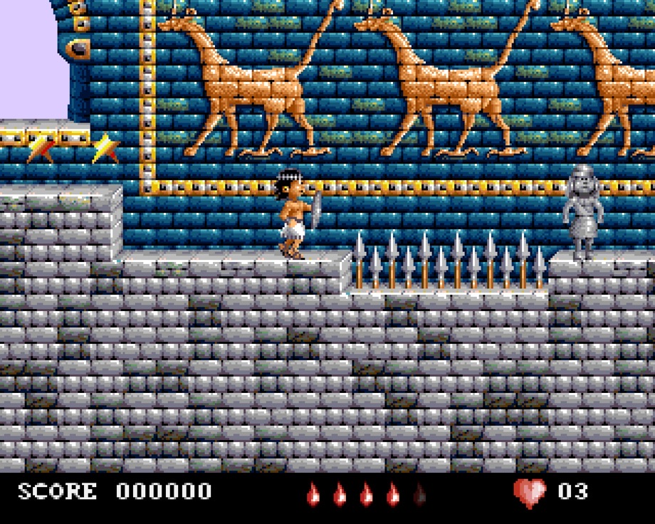
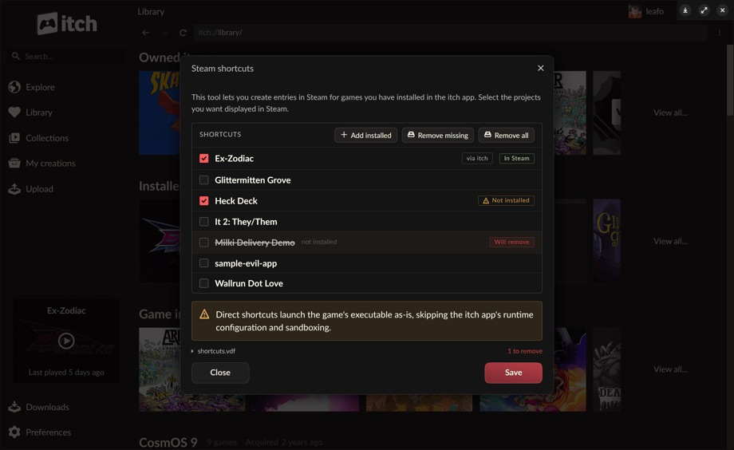
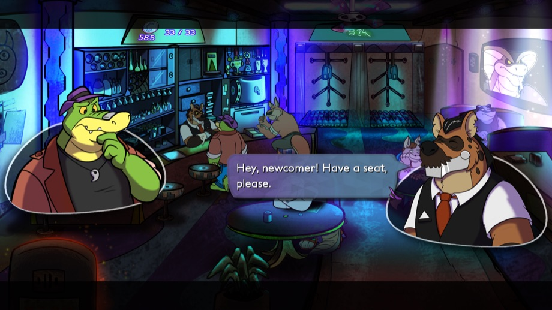
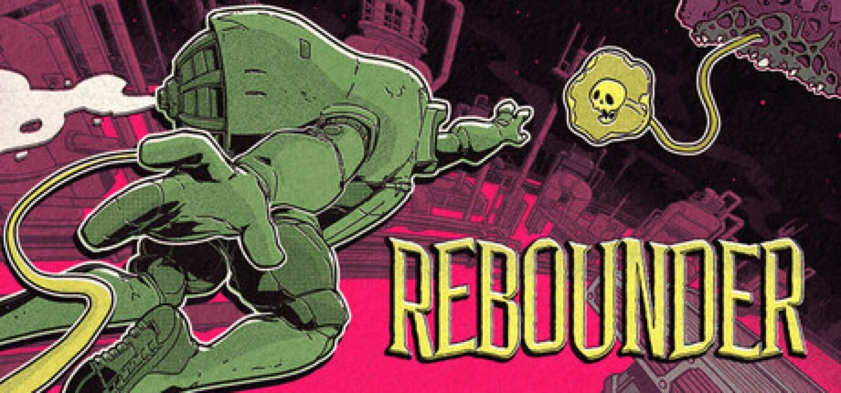
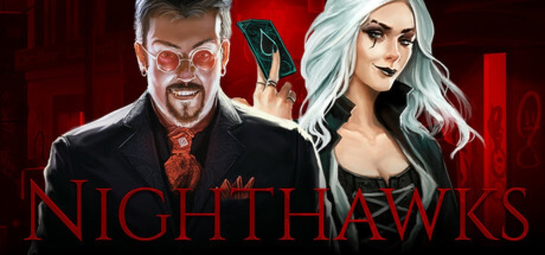
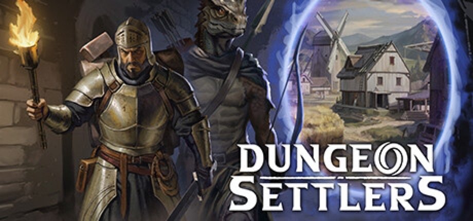
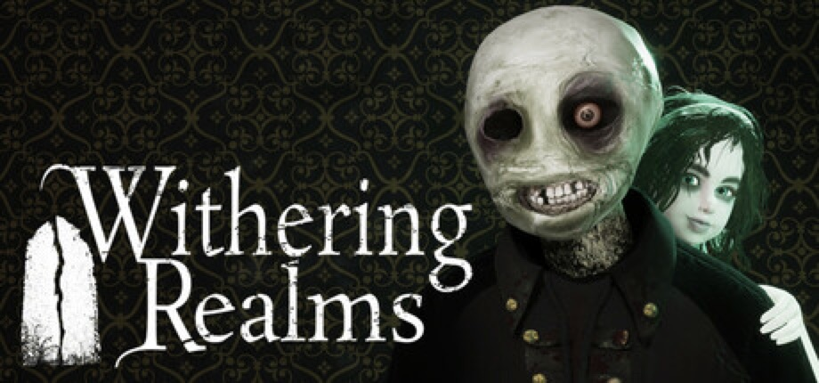
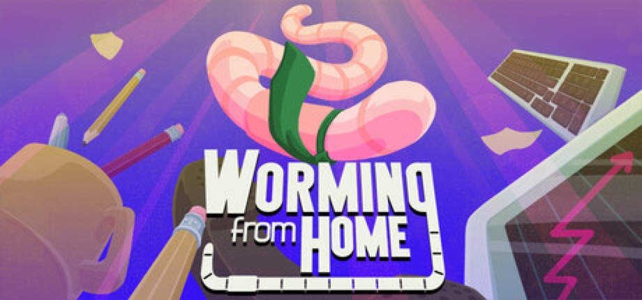
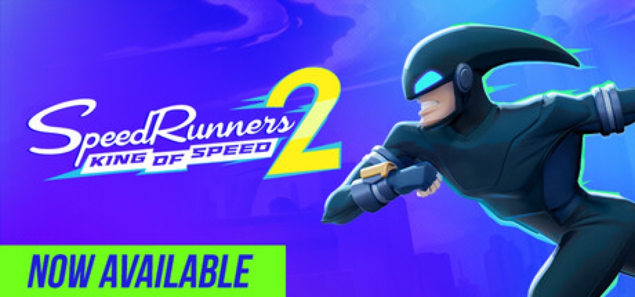
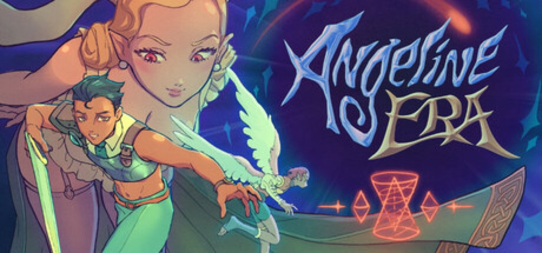

> ITCH.IO NEWS
-

[ PRESERVATION ] The First Commercial Game Made in Iraq Was Finished in 1993. Its Original Disks Are Now Free.The devlog is signed, which is the first sign it isn't a normal patch note. "In 1993, in Baghdad, three of us made a video game. I'm Rabah Shihab." What follows is the shortest possible account of how Babylonian Twins got made and why nobody played it: written in pure 68000 assembly on a single Amiga 500 — 512KB of RAM, no hard drive, plugged into a TV — with Murtadha Salman painting the palaces of Assyria pixel by pixel and Mahir AlSalman composing a score sampled from real Iraqi instruments. They worked under sanctions, with no internet and no Amiga manuals beyond a single copy of the Amiga Hardware Reference Manual, which is how Shihab came to program the hardware directly, and with electricity for a few hours a day. The 50°C summers killed the disk drive three times. They finished it — the first commercial video game made in Iraq — and then Commodore collapsed, the sanctions scared off every publisher, and a completed game had nowhere to go. It stayed nowhere until 2008, when the English Amiga Board found the developer's brother's old gameplay footage on YouTube, opened a thread titled "Babylonian Twins — An Amiga game?!" that ran to 24 pages, and tracked the team down. A playable demo followed and was downloaded in over 70 countries; the full game still never shipped. This week's devlog is that ending. The complete original game is now on itch.io for free, as the actual two original disks — .ADF images for FS-UAE, WinUAE or real hardware, Disk 1 boots and Disk 2 goes in when the game asks — with the 1993 demo ADF kept alongside as history and manual and design-note scans promised in a follow-up. A rebuilt Definitive Edition is coming to Steam this fall, and the post is careful to say that is not what the page is for: "This page is for the community that never stopped asking." Source: itch.io devlog · Download page · Heritage page
-
 [ MAJOR UPDATE ]
A Music-Making Sim Adds Reverb, EQ and the World's Tiniest Violin
[ MAJOR UPDATE ]
A Music-Making Sim Adds Reverb, EQ and the World's Tiniest Violin
pantaloon's OFFBEAT — a studio-building game where the studio is the instrument — has shipped the Studio Essentials Update, its first major addition since entering Early Access on July 22, and marked it with a music video for a track called "Pepperoni Pizzicato" composed entirely inside the game. The additions are three musical objects and they are exactly what the title implies were missing: strings, by way of the World's Tiniest Violin, which can be upgraded to unlock a wider range of sounds; a Reverb Pedal; and an EQ for boosting, cutting and balancing frequencies. Around them sit eleven new client jobs — "Cave People Techno," "The Museum of Orbs," "A Self-Hypnosis Tape" — plus effect buses that route several sources through one chain, a desk inventory for stashing equipment you aren't using, custom song editor options for repeats and section variations, the Dorian mode, and notebook entries that teach effect buses, reverb technique and a little music theory ("Very educational. Probably."). The part worth flagging for anyone weighing a tool-shaped game against an actual tool is unchanged and restated in the post: every track you make exports as a .wav and is yours, including commercially. "The music you make belongs to you." The studio calls this the first of several planned major updates. v1.1.0, a 336MB download, $11.99 with 15% off to $10.19. Source: itch.io devlog · Game page
-

[ PLATFORM ] The itch App Learns to Put Your itch.io Library Inside SteamThe single most common thing an itch.io game has to compete with is the Steam library it isn't in — so itch.io's September 2 app release goes at that directly. v26.20.0 adds a Steam Shortcuts tool, reachable from the app's preferences or by right-clicking any installed game, that writes your itch games into Steam as non-Steam shortcuts and files them in an itch.io collection. The target is stated plainly: people "deep in the Steam ecosystem" on a Steam Deck or in Big Picture mode, who currently have to leave Steam entirely to play anything bought on itch. Two modes, and the trade-off between them is spelled out rather than hidden. Launch with itch routes through the app, so play time lands on your itch.io profile and per-game settings — sandboxing, environment variables, API keys — still apply. Direct points Steam at the executable, which keeps the Steam overlay and Proton out of the app's way but means no sandboxing and no idea the game is running. The plumbing underneath is the part other developers should read. Steam shortcuts needed a way to start a game without the app in the way, so itch built a headless launch mode: itch-setup --run-game <gameId>, a new butler launch subcommand running the launch machinery against your existing app database. It respects everything configured in the app, and itch is explicit that it isn't Steam-specific — "any launcher, shortcut system, or script can use it, and we hope this makes it easier for other launchers to add itch.io integration," with a launcher-integration guide published alongside. HTML5 games are the exception; they need a browser, so the app still opens. Also shipping: Link existing folder…, an escape hatch for games downloaded outside the app — nothing is verified, the app takes your word for what's in the folder, and the game then behaves as installed. The Steam shortcuts feature is flagged as experimental and bug reports invited. Source: itch.io blog · Launcher integration guide · itch app
-

[ MAJOR UPDATE ] Steam Has Workshop. itch.io Doesn't. So One Developer Built His Own.itch.io has no user-generated-content infrastructure — no Workshop, no in-client mod browser — which for any game built around player-made content means the itch build is structurally the lesser version. COWCAT, the French solo developer behind the accessibility-focused adventure game BROK the InvestiGator, has stopped waiting. Update 1.6.5.1 for beat-'em-up spin-off BROK: The Brawl Bar, posted September 3, leads with it: "Great news, I have implemented a workshop for non-Steam builds! It will also be shared by mobile versions." Players on the itch.io and mobile builds can now share and download challenges from inside the game itself, with the manual export path from Steam Workshop still available for anyone who wants it — one developer building and hosting a cross-platform UGC pipeline so that the version he sells direct isn't the crippled one. The rest of the patch is characteristically small and specific. The 1.6.5 base, out September 2, added Romanian localisation, made the music loops seamless ("No more hiccups when the loop restarts!"), tidied the root folder, and moved the game onto GameMaker's 2026 LTS — the version jump explained by mobile builds having already been maintained separately on the newer runtime. The hotfix on top fixes a crash returning to the main menu, adds a gamepad button to leave Atlasian Madness, removes an F10 restart key that was being hit by accident, and does two things for the game's blind players: clipboard narration no longer forces autoplay on permanently, and there's a new toggle for whether voices get sent to the narrator at all. The game is 33% off, $9.99 down to $6.69, with Windows, macOS and Linux builds around 1.7GB each. Source: itch.io devlog · Game page
-
 [ DELAY ]
An Update Bigger Than the Game It Updates: Keyframes Pushes First Summer to November 30
[ DELAY ]
An Update Bigger Than the Game It Updates: Keyframes Pushes First Summer to November 30
(BLANK) HOUSE's college slice-of-life visual novel has slipped the date its players were reading off their own Steam wishlist pages. The September 2 devlog is blunt about it: the team's "optimistic goal" was to ship First Summer, the project's first commercial update, by the end of this quarter, and instead it moves to "November 30th, 2026 at the latest." The reason given is the ordinary one, stated without spin — the summer season is nearly over and production still has a way to go, and rushing it would deliver "anything less than a fun, fulfilling summer break." What makes the post worth reading is that it shows its working, down to a bar chart. Art is almost done: backgrounds and main CGs at 100%, main sprites 90%, NPC sprites and event CGs 75%, phone CGs about 57%, with only some clothing variations and a couple of CGs outstanding. Writing is where the time is going. The two remaining pieces are what the team calls "canon" events — the biggest events in the game, the most characters, the most scenes, the most convoluted variations to manage — and they already hold 60,000 words, with roughly another 60,000 expected before they're done. About a third of the update's content is programmed, with finished sections going into the build as they're written rather than waiting for a handoff. The scale is the story: the released game, your first spring semester at Wryn Mayer with an ensemble cast of five, runs about 280,000 words; First Summer alone is already past 330,000 and counting, with 40 new location arts and 30 mix-and-match events — the milestone moments, the casual hangouts, the run-ins — from a writing team the studio has since expanded. The promise attached is a tonal one: choices that "can turn this comedic, slice-of-life story into the beginnings of a troubling drama." $25 on itch.io. Source: itch.io devlog · Game page
-
 [ BUNDLE ]
Games for Scholarships Steadies at $140 a Day — Against $348 Needed
[ BUNDLE ]
Games for Scholarships Steadies at $140 a Day — Against $348 Needed
Organizer jesthehuman's back-to-school bundle collects everything submitted to the Games for Scholarships jam — 365 entries across video games, browser games and tabletop RPGs, made between July 13 and August 10 under a jam policy that barred discriminatory and AI-generated material. The resulting DRM-free package is 324 items from 159 creators for a $10 minimum, against a regular value of roughly $681. Every dollar goes to Games for Change, funding scholarships for underserved youth in the G4C Student Challenge, the nonprofit's global design competition for students aged 10 to 25. A week after the original $10,000 target fell and the organiser doubled the post to $20,000, the page reads $14,415.57 raised, 72% funded, from 1,195 contributors averaging $12.06 each with a $75 top contribution. The past day added $140 and twelve backers — off the floor of the previous day's $55, but the seven-day shape is unambiguous: $896, $659, $597, $704, $165, $55, $140. The $704 bump on September 1 now reads as the last of the back-to-school traffic rather than a turn. The campaign closes 06:59 UTC on September 21 — sixteen days — with $5,584 still to find, or roughly $348 a day against a run rate coming in at two-fifths of that. The original goal is long since banked; what is at stake now is only the doubled one. Source: itch.io bundle page · Jam page
> INDIE SCENE
-

[ PUBLISHING ] An Indie Studio Made a Hit, Then Turned Itself Into a Publisher — Cheques Under $500k OnlyThe usual next step after an indie studio lands a breakout is a bigger studio. Aggro Crab — the Seattle team behind Another Crab's Treasure and, with Landfall, the co-op climbing phenomenon PEAK — has instead opened a publishing label and started handing the money out. Head of publishing Corey Warning puts the reasoning plainly: "PEAK's success put us in a unique position…we were interested in growing our catalog." The terms are where it gets interesting, because they are deliberately small. Aggro Crab is taking submissions for projects that need $500,000 or less and can be finished inside two years — the bracket most publishers have spent the last three years abandoning as too small to bother with — and it says outright that it will not consider anything using generative AI. What it wants is stylised, high-intensity games with an attitude, which is to say more of what it already makes, with feedback offered from the position of a studio that still ships its own games. The first project is Rebounder, from developer ThirtyThree: a precision platformer about a roughneck hired to haul cargo across a hazardous lunar worksite, where you move by grabbing, throwing and bouncing off alien plants and creatures, chaining trick shots, ricochets and wall slides. It takes its cues from speedrunning and kaizo — instant respawns, unlimited attempts — across more than 500 hand-crafted screens in six chapters, and it looks like vintage science-fiction comics rendered through the printing errors: Ben Day dots, ink bleed, misregistration. ThirtyThree co-founder Logan Gilmour on the arrangement: "It's been awesome working with Aggro Crab. They totally understand our vision." A new playable demo ran at Aggro Crab's PAX West booth; the game is Windows, Steam, 2027. Source: Noisy Pixel · Console Creatures · Steam
-

[ RELEASE DATE ] Eight Years After Its Kickstarter, an 800,000-Word Vampire RPG Finally Has a DateNighthawks has a release date: September 22, on Steam and GOG, with native Windows, macOS and Linux builds. That sentence has been a long time coming. Nearly 4,000 backers put $136,128 into the project on Kickstarter; it has been in development at The Curiosity Engine ever since, and it now arrives published by Wadjet Eye Games, the adventure-game specialist behind Unavowed and Old Skies, with founder Dave Gilbert producing. The writer is Richard Cobbett, whose credits are Failbetter's Sunless Sea and Sunless Skies, and the art is by Ben Chandler; the engine is Godot with the narrative running on ink. The premise is a vampire story that skips the masquerade — the secret is out, the undead are public, and you are six months into your unlife, newly arrived in the one city on the continent that has publicly promised vampires a second chance. What you do with that is build a nightclub empire out of fear, seduction and supernatural gifts (Mesmerism, Natural Dominion, Tenebrous Form), across two years of in-game time, with ten recruitable companions and a cast of 80-plus fully voiced characters. The number that explains the eight years is 800,000 words. For scale, that is roughly three times the released build of most commercial visual novels this site has covered, in a genre where text is the entire product. Source: GamingOnLinux · Rue Morgue · Steam
-
 [ FESTIVAL ]
A Visual Novel Studio Runs Its Own Steam Festival, Showcase and All
[ FESTIVAL ]
A Visual Novel Studio Runs Its Own Steam Festival, Showcase and All
Steam's calendar is dominated by Valve-run sales, so it's worth noting who is behind the Fall in Love Festival, running September 1 to 9: not Valve and not a publisher, but Studio Élan, the developer of Highway Blossoms, Heart of the Woods and Please Be Happy — a small yuri VN studio curating a storefront event for hundreds of romance-themed visual novels, with discounts, demos and developer streams. "Romance" turns out to be load-bearing rather than limiting: the lineup runs from an otome comedy about a girl cursed to tell the worst dad jokes imaginable (Jest Messters) to a psychological horror about a dystopian company that serves mermaids as food (Mermaids are Seafood), a medieval resource-management and political-intrigue romance (Imperial Grace), a rotoscoped interactive comic (After the Wane), and Devil's Liminal, which shipped its 1.0 into the middle of it. The festival's own showcase stream ran trailers for featured games on September 3 at 19:00 UTC; the sale itself has four days left. What the festival is actually worth is best measured in what small teams do with it: Maroon Ink Studio timed the first public demo of Nozomu School Daze to opening day, then spelled out the arithmetic behind the ask most developers dress up — "Steam reviews give us SO much visibility. If we get 10 of them (yes, just 10!!) on our main game page, the algorithm starts actively promoting our game." Source: Yeah Nah Gaming · Festival page · Maroon Ink devlog
> INDIE GAME RELEASES — SEPTEMBER 2026
-

SEP 4 Dungeon Settlers — EARLY ACCESSThe pitch is two genres that rarely share a save file: a colony sim on the surface and a party-based dungeon crawl underneath it, with the same people in both. CanOpener's dark-fantasy strategy game, self-published with WhisperGames, went into Early Access on September 4. You build a settlement in barren land, feed and house the survivors, then send expedition members down into a procedurally generated dungeon and fight through it in real time with a pause button — and the settlement half is what gives the combat half its weight, because the dead do not come back and the person you just lost was also the one growing your food. Characters carry traits and progression between runs; the settlement is freeform rather than grid-locked. The developers are budgeting roughly two years in Early Access, with more regions, monsters and Steam Workshop modding on the list, and say the price goes up at 1.0. Opening reception is the strongest of the day's launches: Very Positive, 86% of 127 reviews. Windows and macOS, ten languages, $24.99 with an introductory 15% off to $21.24 until September 18. Steam
-

SEP 4 Withering Realms — EARLY ACCESSMoonless Formless's action RPG opens in 1926 with Clover, a nine-year-old ghost, waking in a decaying mansion at the epicentre of an occult event, accompanied by a guardian doll built out of wood, metal and human remains. The loop is a dungeon crawl with a craft bench attached: descend into tombs, caves and rotting estates around the town of Penwyll after treasure, upgrade materials and magical artifacts, forge weapons onto the doll's arm, kill the guardians holding the perimeter, and recruit allies — all of it aimed at getting Clover resurrected rather than merely avenged. It launched into Early Access on September 4 with a full start-to-finish run already playable in English; the developer is targeting Q2 2027 for 1.0 plus console versions, with more languages, end-game content and optimisation to come. 28 achievements, single-player, Windows only. Opening reception is 100% positive across 22 reviews — a small number, but unanimous. $19.99, cut 15% to $16.99 until September 11. Steam
-

SEP 4 Worming from Home — OUT NOWThe demo had been sitting on Steam since January 30 at 98% positive across 335 reviews, which is a strange number for a game whose entire pitch is that you are a worm with a finance job. Zach Northrop and Mason Sabharwal's remote-work simulator launched September 4: you are a junior financial analyst, you are an annelid, and the office does not appear to have noticed. Everything is ragdoll physics and no hands — you fling your spineless body across the keyboard to squirm between keys and fill spreadsheet cells, leap onto the mouse to navigate, hop onto the phone to take or kill a call. Around the work sits a whole life to mismanage: the gym, shopping, socialising, reading, and a stock market to invest the salary in, with promotions, upgrades and cosmetics as the progression. It is single-player, Windows and macOS, with Steam Cloud and achievements, and localised into French, German, Spanish, Japanese, Russian and Simplified Chinese — the last of which suggests someone expects the streaming clips to travel. The obvious comparison, made at announcement and never really shaken off, is QWOP by way of Earthworm Jim, except that Jim at least had the suit. Steam · Demo · GameSpew
-

SEP 3 SpeedRunners 2: King of Speed — OUT NOWThe sequel to one of the defining couch-and-lobby indie multiplayer games of the 2010s arrived September 3 on PC, PS5, Xbox Series and Switch, with Game Pass on day one — and the opening reception is the story. Fair Play Labs and tinyBuild have built out everything the original was short of: up to eight players per online lobby instead of four, a story campaign through New Rush City with new and returning heroes, ranked play, 64-player elimination tournaments, local multiplayer, 12 characters, and an expanded power-up arsenal that keeps the fireballs and freeze rays while adding blasters and portable teleporters. The netcode was rebuilt. And yet Steam has it at Mixed, 59% of 112 reviews, for a series whose first game sits Overwhelmingly Positive on tens of thousands — a gap that is worth watching over the next fortnight, because a competitive game's launch-week review score and its six-month one are frequently different games. $9.99, cut 10% to $8.99 until September 17. 32 achievements, Windows via Steam. Steam · Gematsu
-
 SEP 2 Moonlighter 2: The Endless Vault — 1.0
SEP 2 Moonlighter 2: The Endless Vault — 1.0Digital Sun's shopkeeper-by-day, dungeon-crawler-by-night sequel left Early Access on September 2, nine and a half months after entering it, and did so on every platform at once: PS5, Xbox Series, Switch 2 and PC via Steam and the Microsoft Store, with a Game Pass listing on day one. What 1.0 adds is specifically the ending the Early Access build was missing — the seventh and final Endless Vault challenge, which carries the story's conclusion — plus four new Endless weapon variants, more armour, cosmetics and gadgets, the fifth and final shop upgrade level (another Bobbet slot and cosmetic placement), a Bomb Path perk line that lets you tag enemies with explosives for area damage, and a Hardcore mode that takes your relics and progress permanently when you die. The series' move to 3D survives intact: buy low, price high, keep the shop stocked, then take a backpack of loot into an interdimensional collector's vault and try to come back out. 56 achievements. $29.99, cut 30% to $20.99 through September 16. The review picture is the honest part — Very Positive overall at 85% of 1,270 reviews, but the last 30 days sit at Mostly Positive, 78% of 142, which is what a launch-week influx of players hitting a game that had been in Early Access for nine months tends to look like. Physical standard and collector's editions follow on November 13 via Silver Lining Interactive. Steam · RPGFan
-
 SEP 2 BOMBANANA! — OUT NOW
SEP 2 BOMBANANA! — OUT NOWThe demo that ate Steam Next Fest is now a game. Istanbul's Lefto Studio, published by TARK, shipped BOMBANANA! on September 2 carrying numbers most indie launches never see: over 1 million wishlists, the most-played demo of Steam Next Fest 2026 at more than 6 million demo players, and the second most-played demo on Steam across June to August. The concept explains the spread in one line — three monkeys defuse a bomb; one is blind, one is deaf, one is mute. Exactly three players, no more and no fewer, each holding a different fragment of what's needed, with modules and rules that change between bombs so the only durable skill is working out how to talk to each other. "Communication is key, and everyone has a different idea of what exactly 'good' communication is," as the studio puts it, promising "lots of yelling, desperate gesturing and silly shenanigans." Between the demo and today the team rebuilt more than they had to: a new art direction, three modes (a 30-level Campaign, Endless and Custom), new environments with their own hazards, new puzzles and modifiers, and a full monkey overhaul with emotes, voice-synced animations and the ability to slap your teammates. Server browsing and room codes, controller support, Steam Deck support, 23 achievements and a colourblind mode round it out. Windows and macOS. $7.99, cut 38% to $4.95 until September 9. Opening reception is Very Positive, 96% of 151 reviews. Steam · Press release
-
 SEP 2 ShipShaper: Falconeer Chronicles — EARLY ACCESS
SEP 2 ShipShaper: Falconeer Chronicles — EARLY ACCESSTomas Sala, the BAFTA-nominated solo developer of The Falconeer and Bulwark: Falconeer Chronicles, has put out something with no fail state and no campaign: a game about designing ships, published by Wired Productions with Gamersky Games. You pull, push and drag hull forms into shape — fishing boat to dreadnought — without knowing anything about 3D modelling, then take the result out to sail, where hull shape, propulsion and weight decide how it actually behaves. The part that makes it more than a toy is the export path. Ships come out as FBX or STL for 3D printing or for use in your own projects, under a free commercial licence, and they can be loaded straight into Bulwark — a solo developer treating his own back catalogue as an asset pipeline for other people's work. The Early Access statement is unusually relaxed about scope: minimum three months, with the core feature set already substantially there, and the roadmap listing airships with balloons and flight, an expanded test drive with gun aiming and firing, a ship-analysis system that generates stats, themed content packs (carriers, ocean liners, Asian hull designs) and quality-of-life work. Windows, with Linux via Proton. 10% launch discount. Opening reception is 100% positive across 21 reviews. Steam · Wired Productions
-

SEP 2 Angeline Era — NOW ON CONSOLESMelos Han-Tani and Marina Kittaka — Analgesic Productions, the pair behind Anodyne and Sephonie — have brought their 3D action-adventure to PS5, PS4, Xbox Series, Xbox One and Switch, self-publishing the ports rather than handing them to a label. The PC version has been out since December 2025 and sits Overwhelmingly Positive, 95% of 642 reviews, which is the kind of number that usually belongs to something far more conventional than this. Combat is "Bumpslash": you attack by walking into enemies, no button, and the whole fast, twitchy system comes out of that one decision. The world is a vast unmarked overworld where, as the store copy has it, every level is hidden in plain sight — forests, mountains, mines, ruined buildings and towns, no map markers, a non-linear route through. Tets Kinoshta, an ex-soldier, allies with an angel named Arkas Gemini to work out what the dormant mothership Throne is for; the lore draws on Irish mythology and early Christian philosophy and runs on betrayal and fruitless yearning, cut with what the developers cheerfully call hilarious hazards. A first playthrough runs 20 to 30 hours, 15 if you're direct about it. $24.99 on consoles; the Steam build is 20% off to $19.99. Xbox Smart Delivery, and Switch 2 runs it at a boosted handheld frame rate. Steam · RPG Site · RPGamer round-up
Release list sources: Green Man Gaming — Indie Game Release Round-Up, September 2026, RPGamer — New Release Round-Up (September 3, 2026), GamingOnLinux — daily indie coverage, Steam — new releases by date, plus per-entry Steam / press links above. Game artwork: official Steam store assets, press kits and site key art, © their respective developers and publishers.
> ABOUT
CyberCycho is a curated digest of itch.io.